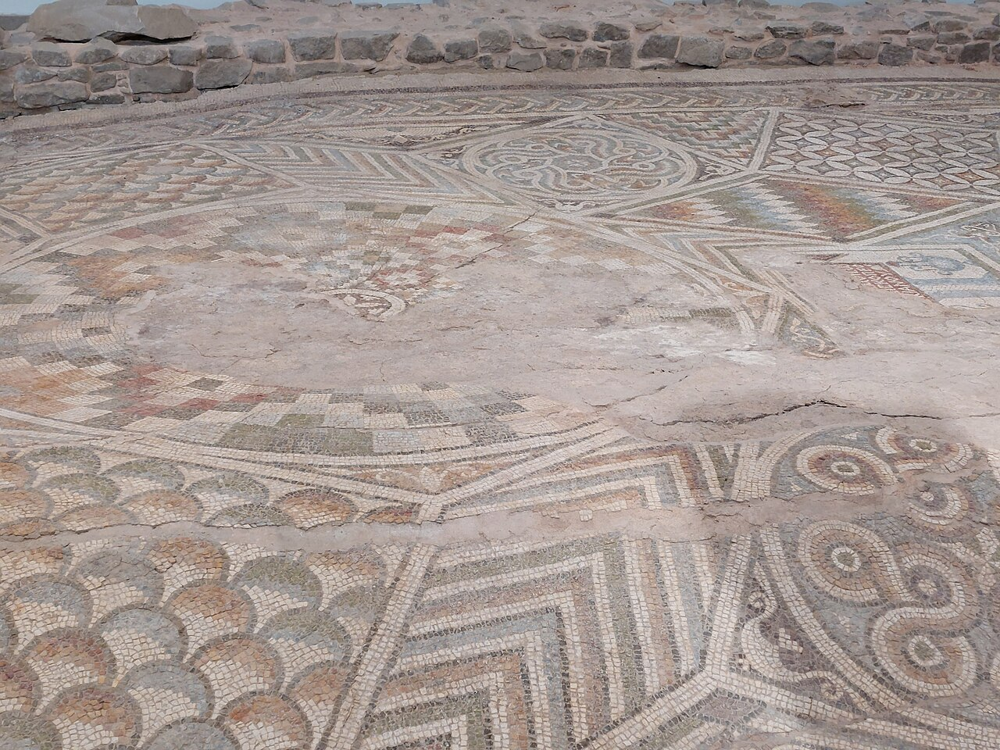

09:00–09:50
Епископская базилика Филиппополя
Большой современный музей над раннехристианской базиликой IV–VI веков. Главная фишка — огромные напольные мозаики с птицами, геометрией и символами раннего христианства.
Зачем идти: это один из самых сильных археологических объектов Пловдива и хороший старт дня в помещении.
- ⏱ 45–60 мин
- 🏛 внутри
- 09:00–18:00